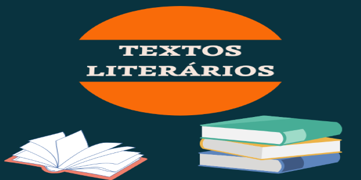

Poema é um texto literário escrito em versos, que são distribuídos em estrofes. Esses versos podem ser regulares, brancos ou livres. Se for composto por versos regulares, esse texto poderá apresentar diversos tipos de rimas. Também pode ser narrativo, dramático ou lírico.
Um texto literário é uma construção textual de acordo com as normas da literatura, com objetivos e características próprias, como linguagem elaborada de forma a causar emoções no leitor.